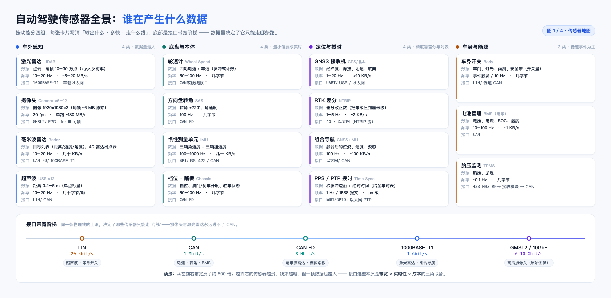
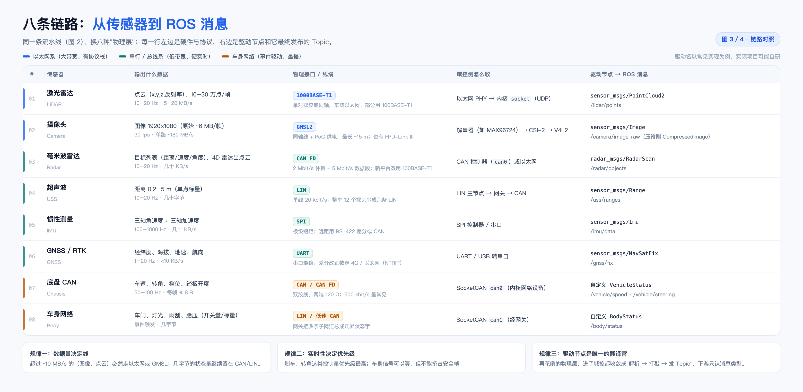
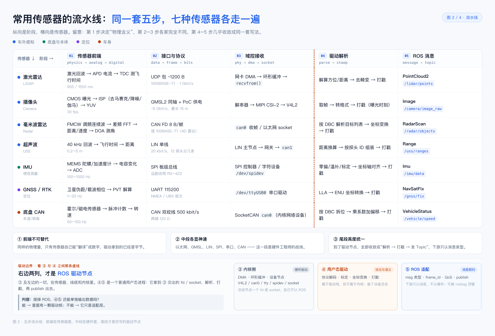
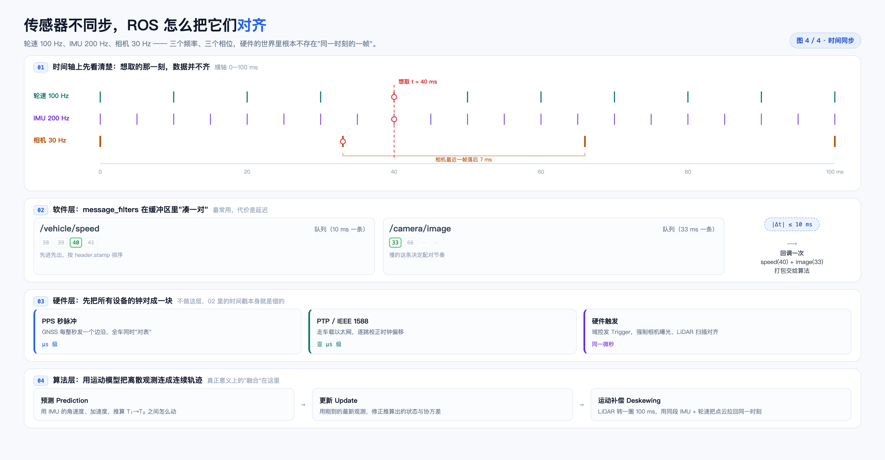

四张图按“总量 → 分段 → 落地 → 时间”排列。第 4–5 页是本次重点：驱动节点到底站在哪一段，以及它算不算硬件驱动。
先看表，再看图。四张图是一套：图 1 定“有哪些、多大量”，图 2 定“分几段、谁负责”，图 3 把图 2 的每一格落到具体硬件，图 4 处理图 2 尾段留下的时间问题。
| # | 回答的问题 | 一句话结论 |
|---|---|---|
| 1 | 谁在产生什么数据 | 四类传感器，数据量差 500 倍；线路是被数据量选的 |
| 2 | 一份数据经过谁的手 | 五步里只有 ④⑤ 是你的代码，③ 与 ④ 之间是内核边界 |
| 3 | 每颗传感器具体怎么接 | 八条链路，左边硬件与协议，右边驱动与 Topic |
| 4 | 不同步怎么对齐 | 打戳、凑对、对表、预测，四层缺一不可 |
“传感器驱动会解析数据然后发 topic 吗，还是有一个中间节点统一监听？”这个问题看起来是在问架构，实际是在问责任边界。边界不清，会同时出现两种错：把驱动当应用（于是不敢在容器里跑、不敢重启），或把驱动当内核（于是把所有协议栈塞进一个进程）。
图 2 把这条边界画成了 ③ 与 ④ 之间的虚线，本册第 4–5 页专门解释它：ROS 驱动节点 = ④ 解析 + ⑤ 发布，它站在 ③ 交出的 fd 上，属于驱动栈，但不属于硬件驱动。
| 词 | 本册指什么 |
|---|---|
| 前端 | 传感器内部的模拟与数字电路，把物理量变成数字量；到了这里，后面全是字节 |
| 域控接收 | 内核驱动 + 协议栈 + 设备节点，把字节变成 fd / socket 可读的数据 |
| 驱动节点 | 用户态进程：解析、打戳、填消息、publish；本册的主角 |
| Topic | 下游唯一需要认识的东西：msg 类型 + stamp + frame_id |
四类、十五张卡片：车外感知、底盘与本体、定位与授时、车身与能源。每张卡只写三件事——输出什么、多快、走什么线，这是最省事的读法。
LIN 20 kbit/s → CAN 1 Mbit/s → CAN FD 8 Mbit/s → 1000BASE-T1 1 Gbit/s → GMSL2 6–10 Gbit/s 超声波/车身开关 轮速/转角 毫米波/档位 激光/组合导航 高清相机原始图像
NavSatFix 加一个 Imu，你看不见里面合了几路。所以“装了几颗”不能直接当冗余度用。五步是：前端 → 接口 → 域控接收 → 驱动解析 → ROS 消息。纵向是阶段，横向是传感器。第 1 步决定物理含义，第 2–3 步各家完全不同，第 4–5 步几乎收敛成同一套写法。
图 2 底部那条带子标的是整张图最重要的一条边界：③ 及左边的一切在传感器、线缆和内核里；④⑤ 才是你写的 ROS 驱动节点。
| 列 | 实际归属 | 典型形态 | 换它要动谁 |
|---|---|---|---|
| ① 传感器前端 | 传感器固件 + 模拟前端 | APD/TDC、CMOS+ISP、MEMS+ADC | 换传感器 |
| ② 接口与协议 | 物理层 / 链路层 | GMSL2、CAN、LIN、SPI、UART、以太网 | 换线束 / 收发器 |
| ③ 域控接收 | 内核驱动 + 协议栈 + 设备节点 | V4L2、SocketCAN、tty、spidev、socket | 内核 / 驱动模块 |
| ④ 驱动解析 | 用户态驱动 | 解包、标定、坐标变换、打戳 | 换 SDK / 改节点 |
| ⑤ ROS 消息 | 适配层 | msg 类型、frame_id、QoS、publish | 换消息类型 |
open("/dev/video0") / ioctl(VIDIOC_DQBUF) ← ③ 的出口：拿到 fd
recvfrom(sock) / read(can_fd) / read(spi_fd)
────────────────────── syscall 边界 ──────────────────────
parse(buf) → points | image | frame ← ④
stamp = driver_time ← ④
publish(topic, msg) ← ⑤
广义：算。它是驱动栈的用户态那半截，干的是协议解析、设备状态机、错误恢复、打时间戳这些“驱动该干的活”。Linux 本来就有用户态驱动的传统（i2c-dev、spidev、libusb、UIO）——内核只给字节流，私有协议只能由用户态接管。
严格：不算。它不持有设备、不在特权层、能在容器里跑、能被 rosbag play 顶替。这四条都是“应用”的特征，不是“驱动”的特征。
driver_core（不依赖 ROS 的库，可单测）+ ros_node（薄壳：参数、msg 转换、QoS、生命周期）。这样“算不算驱动”就不再是语义争论——core 是驱动，node 是适配层。
八条依次是：激光雷达、摄像头、毫米波雷达、超声波、IMU、GNSS/RTK、底盘 CAN、车身网络。同一套五步，换八种“物理层”各走一遍。
| 传感器 | 常见驱动节点 | 依赖 / 解析表 |
|---|---|---|
| 激光雷达 | velodyne_driver / robosense_ros / livox_ros_driver2 | 厂商 SDK、UDP 协议 |
| 摄像头 | usb_cam / v4l2_camera / camera_ros | V4L2、GStreamer |
| 毫米波 | 厂商 CAN 驱动 / 自研 radar_driver | DBC 文件 |
| 超声波 | 自研 LIN→CAN 汇聚节点 | 探头 ID 表 |
| IMU | 厂商驱动 / imu_tools | spidev、标定参数 |
| GNSS | nmea_navsat_driver / ublox_dgnss | NMEA / UBX |
| 底盘 / 车身 | ros2_socketcan、自研网关节点 | DBC 文件 |
轮速 100 Hz、IMU 200 Hz、相机 30 Hz。想取 t = 40 ms 那一刻，相机最近一帧落后 7 ms——“同一时刻”在硬件世界里根本不存在。
message_filters 在缓冲区里“凑一对”，|Δt| ≤ 10 ms；慢的那条决定配对节奏，代价是延迟。message_filters 只能“凑”不能“造”，差 7 ms 可以近似，差 70 ms 只能靠预测；③ 时钟源要统一，混用 CLOCK_REALTIME 与 CLOCK_MONOTONIC 是排查同步问题最常见的坑。
| 来源 | 典型精度 | 说明 |
|---|---|---|
订阅端收到时 now() | 1–5 ms | 不推荐，等于把传输延迟算进了采样时刻 |
驱动 read() 返回后立刻打 | 0.1–1 ms | 入门做法，比订阅端好，但抖动仍在 |
| 报文自带时间戳 | μs | 雷达 / 相机常用；需要先对时，否则是“设备自己的时钟” |
| PTP / PPS / 硬件触发 | 亚 μs | 多传感器融合的底线配置，图 4 第 3 层 |
误解一：“驱动就是厂商 SDK / 内核 .ko”。图 2 的 ③ 才是内核，④–⑤ 是用户态进程；SDK 只是 ④ 可能引用的库。把三者混为一谈，就会出现“容器里跑不了所以驱动上不了车”这类误判。
误解二：“有一个中间节点统一监听所有传感器”。没有。每颗传感器一个驱动节点，中间是 topic 不是节点；真正存在的“中间层”只有管理框架（启停、配置、健康检查）和转发工具（relay、rosbag、bridge），它们都不解析数据。
误解三：“融合应该放进驱动”。融合需要多源、需要时间对齐，属于下游；塞进驱动，等于把可替换的边界变成单点。驱动只负责把每一路翻译成“带 stamp 和 frame_id 的测量”，融合是订阅端的事。
① 谁最接近硬件、最懂协议，谁负责解析；解析完立刻变成标准消息。
② 拔掉 ROS 还能独立输出 → 驱动核；不能 → 适配层。
③ 打戳的位置决定同步的上限；坐标变换可以挪，时间戳不能挪。
frame_id，且在 TF 树里查得到；stamp 在驱动里打，不晚于 read() 之后；| 文件 | 说明 |
|---|---|
assets/自动驾驶-传感器链路-图1-传感器全景.png | 图 1，四类传感器全景，3120×1524 |
assets/自动驾驶-传感器链路-图2-五步流水线.png | 图 2，五步流水线 + 驱动边界，3120×2117（本次更新） |
assets/自动驾驶-传感器链路-图3-八条链路.png | 图 3，八条链路对照，3120×1528 |
assets/自动驾驶-传感器链路-图4-时间同步.png | 图 4，时间同步四层，3120×1624 |
assets/_make_sensor_chain_fig2.html | 图 2 的源文件（HTML，Chrome 无头截图出图） |
assets/_render_fig2.sh | 图 2 的一键重出脚本（截图 + 裁边） |
assets/_make_sensor_chain_note.html | 本笔记 PDF 版的排版源文件 |
2026-11-自动驾驶-传感器链路-读图说明.pdf | 排版后的 A4 版本（9 页） |
cd 笔记/三维视觉/assets ./_render_fig2.sh # 依赖 Chrome 与 Pillow，覆盖输出图 2 的 PNG
cd 笔记/三维视觉 CHROME="/Applications/Google Chrome.app/Contents/MacOS/Google Chrome" "$CHROME" --headless --disable-gpu --no-sandbox --no-pdf-header-footer \ --print-to-pdf="2026-11-自动驾驶-传感器链路-读图说明.pdf" \ "file://$PWD/assets/_make_sensor_chain_note.html"
_make_sensor_chain_fig2.html 里的 .band 块和 .cutcol 的虚线，重跑脚本即可得到无带版本。
2026-11-CAN链路-Q1-Q5（总线、帧 ID、DBC 拆位）· 2026-11-时空同步-双轨穿插与三个耦合点（时间与空间的耦合）· 2026-10-坐标系-传感器-IMU-GNSS与ROS工程零散点（外参与坐标系）